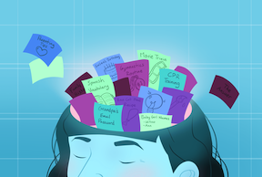
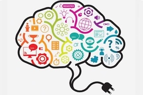

Brief Description of Napping
Napping provides a plethora of advantages for adults, making it a rejuvenating practice worth considering. One of the primary benefits is an increase in alertness, which helps individuals feel more awake and focused after a brief rest. Additionally, napping can significantly improve one's mood, leaving individuals feeling more positive and refreshed.
Moreover, short naps have been shown to enhance cognitive performance, allowing for sharper thinking and better problem-solving skills. They play a crucial role in reducing feelings of fatigue, helping to combat the midday slump many people experience. Naps can also boost memory retention, making it easier to recall information and learn new concepts. Finally, by giving the mind a chance to rest, napping can spark creativity, leading to new ideas and innovative thinking. Overall, incorporating short naps into a daily routine can be a powerful tool for enhancing overall well-being and productivity.
Cognitive Benefits
Improve Memory
Napping enhances memory by promoting memory consolidation, which strengthens and makes memories more durable. It also aids in the encoding of new information and can improve cognitive performance by reducing sleepiness and increasing alertness. Additionally, naps facilitate the transfer of memory traces from the hippocampus to the neocortex for long-term storage.
Enchanced Creativity
Short naps, particularly those lasting no longer than 30 minutes, can significantly elevate creativity in adults by sharpening cognitive functions and promoting the assimilation of information during sleep. When you take a brief nap, it allows your brain to recharge, clearing mental fog and rejuvenating your mind. This refreshed state leads to heightened alertness and an increased capacity to approach creative challenges with new perspectives and innovative solutions.
Better Cognitive Performance
Taking naps, particularly those that range from 30 to 90 minutes, can greatly boost cognitive performance in adults. Research indicates that these short periods of rest are effective in enhancing various mental faculties, including memory retention, alertness, and creativity. Moreover, napping can lead to improved overall brain function, allowing individuals to approach tasks with greater clarity and efficiency. By incorporating these revitalizing breaks into their daily routines, adults can experience a noticeable increase in their mental sharpness and productivity.
Physical and Emotiona Benefits
Increased Alertness
Napping, especially brief naps commonly referred to as "power naps," has the remarkable ability to enhance alertness by effectively counteracting feelings of sleepiness and sharpening cognitive function. This beneficial phenomenon occurs because short naps provide the brain with an opportunity to clear out sleep-inducing waste products that accumulate during wakefulness. Additionally, these restorative moments allow the brain to replenish energy stores, revitalizing mental resources that may become depleted due to inadequate sleep. As a result, areas of the brain that may be fatigued from sleep deprivation receive a much-needed recovery boost, leading to improved focus and productivity.
Improve Mood
Naps can significantly enhance one’s mood by alleviating feelings of daytime sleepiness and reducing stress levels. They serve as a refreshing break that boosts alertness and fosters positive emotions, injecting a sense of vitality into the day. Beyond improving immediate feelings of well-being, short naps play a crucial role in mood regulation by minimizing symptoms of anxiety and depression, allowing individuals to experience a deeper sense of relaxation. Furthermore, engaging in a brief period of rest helps to clear mental clutter, creating an open space for new, creative, and innovative thoughts to flourish and take shape.
Improved Cardiovascular Health
Napping holds the potential to significantly benefit cardiovascular health by helping to lower blood pressure and alleviate stress levels. This simple act of resting can also positively affect sleep patterns and regulate the body's circadian rhythm, which governs the natural sleep-wake cycle.
Research suggests that brief naps, ideally lasting less than 30 minutes, can be particularly advantageous for maintaining heart health. These short periods of rest may enhance alertness and rejuvenate the mind without causing grogginess. However, it's important to note that longer naps could be associated with an increased risk of various cardiovascular issues, highlighting the importance of moderation in napping habits.
What is a Good Nap Time for Adults?
Short naps, typically lasting between 15 to 30 minutes, can be incredibly beneficial for enhancing alertness and cognitive function. On the other hand, longer naps, ranging from 30 to 90 minutes, can provide deeper rest and may help in consolidating memory. Both types of naps serve different purposes, offering a quick refresh or a more thorough recharge, depending on one's needs.
Table
| Sleep Stages | Type of Sleep | Other Names | Normal Length |
|---|---|---|---|
| Stage 1 | NREM (non-rapid eye movement sleep) |
N1 | 1 - 7 minutes |
| Stage 2 | NREM (non-rapid eye movement sleep) |
N2 | 10 - 25 minutes |
| Stage 2 | NREM (non-rapid eye movement sleep) |
N3, slow-wave sleep (SWS), delta sleep, deep sleep | 20 - 40 minutes |
| Stage 4 | REM (Rapid Eye Movement) |
REM Sleep | 10 - 60 minutes |